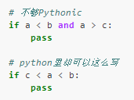

reStructuredText常用规则¶
Contents
章节标题¶
在文本下一行（或上一行）添加至少与文本长度同宽的符号，即可以使文本成为标题。
一级标题
======================
二级标题
-----------------------
三级标题
^^^^^^^^^^^^^^^^^^^^^^
四级标题
""""""""""""""""""""""""
章
-------------------------
节
~~~~~~~~~~~~~~~~~~~~~~~~
小节
########################
说明:
相同级别必须使用统一的符号, 否则会被识别为更小的级别
= - ~ ` : ‘ ” ^ _ * _ # < > 这些符号都可以, 级别足够多了.
1. 字体¶
*斜体*. 被*包围的文字会变成 斜体
**粗体**. 被**包围的文字会变成 粗体
``红色字体块`` 被``包围的字会被变成
红色字体块
注意: 符号外侧必须留有空格, 英文标点符号.
3. 嵌入程序代码¶
在引用代码前段落的末尾添加两个冒号，然后代码段换行缩进，直到不缩进为止.
在引用代码段的前端使用 .. code-block:: python (python根据代码语言替换，如shell，java, go), 然后代码段缩进，直到不缩进为止。
最后生成
在引用代码段的前端使用( :: ),然后代码段缩进，直到不缩进为止。
最后生成
如果是单句代码，可使用 ` 代码 ` 引用:
`from __future__ import absolute_import`
效果：
from __future__ import absolute_import

5. 列表¶
列表前后, 以及条目之间必须有空行隔开. 列表下面可以插入任意的内容, 段落, 图片都可以, 只要他们的左侧和列表的第一个文字左对齐。第二条开始的后续条目可用 # 开头，也可使用 “*” “+” “-” 代替数字，第一条的序号不必从 1 开始:
3. 第三条
#. 第四条
7. 重新设定序号
#. 继续
效果:
第三条
第四条
重新设定序号
继续
* 列表第一级
+ 第二级
- 第三级
+ 第二级的另一个项目
效果:
列表第一级
第二级
第三级
第二级的另一个项目
6. 表格¶
普通表格¶
+------------+------------+-----------+
| Header 1 | Header 2 | Header 3 |
+============+============+===========+
| body row 1 | column 2 | column 3 |
+------------+------------+-----------+
| body row 2 | Cells may span columns.|
+------------+------------+-----------+
| body row 3 | Cells may | - Cells |
+------------+ span rows. | - contain |
| body row 4 | | - blocks. |
+------------+------------+-----------+
普通表格 生成:
Header 1
Header 2
Header 3
body row 1
column 2
column 3
body row 2
Cells may span columns.
body row 3
Cells may span rows.
Cells
contain
blocks.
body row 4
简单表格¶
注意: 表格包含中文时,基本无法对齐,,,
===== ===== ======
Inputs Output
------------ ------
A B A or B
===== ===== ======
False False False
True False True
False True True
True True True
===== ===== ======
简单表格 生成:
Inputs
Output
A
B
A or B
False
False
False
True
False
True
False
True
True
True
True
True
列表表格¶
.. list-table:: Frozen Delights!
:widths: 15 10 30
:header-rows: 1
* - Treat
- Quantity
- Description
* - Albatross
- 2.99
- On a stick!
* - Crunchy Frog
- 1.49
- If we took the bones out, it wouldn't be
crunchy, now would it?
* - Gannet Ripple
- 1.99
- On a stick!
列表表格 生成:
Treat |
Quantity |
Description |
|---|---|---|
Albatross |
2.99 |
On a stick! |
Crunchy Frog |
1.49 |
If we took the bones out, it wouldn’t be crunchy, now would it? |
Gannet Ripple |
1.99 |
On a stick! |
7. 超链接¶
* `《PEP8.org》 <http://pep8.org/>`_
* `《PEP 8 -- Style Guide for Python Code》 <https://www.python.org/dev/peps/pep-0008/>`_
效果：
8. 提示框¶
.. note:: This is note.(注解)
.. attention:: Directives at large.(注意)
.. warning:: This is warning.(警告)
.. caution:: Don't take any wooden nickels.(警告)
.. seealso:: This is seealso.(参见)
.. danger:: Mad scientist at work!(危险)
.. error:: Does not compute.(错误)
.. hint:: It's bigger than a bread box.(提示)
.. important::
- Wash behind your ears.
- Clean up your room.
- Call your mother.
- Back up your data.(重要)
.. tip:: 15% if the service is good.(小技巧)
.. admonition:: by the way
You can make up your own admonition too.
效果如下：
Note
This is note.(注解)
Attention
Directives at large.(注意)
Warning
This is warning.(警告)
Caution
Don’t take any wooden nickels.(警告)
See also
This is seealso.(参见)
Danger
Mad scientist at work!(危险)
Error
Does not compute.(错误)
Hint
It’s bigger than a bread box.(提示)
Important
Wash behind your ears.
Clean up your room.
Call your mother.
Back up your data.(重要)
Tip
15% if the service is good.(小技巧)
by the way
You can make up your own admonition too.